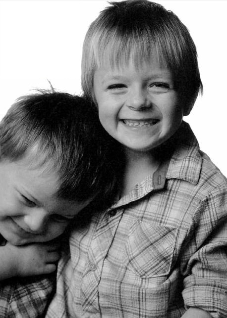
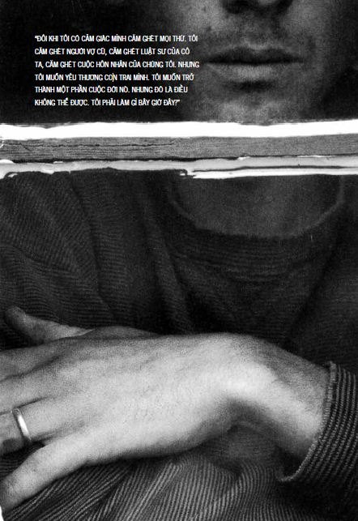

2 GIA ĐÌNH
“TÔI NÂNG BẠN, BẠN NÂNG TÔI VÀ CẢ HAI TA CÙNG BAY LÊN.”
JOHN GREENLEAF WHITTIER

NUÔI DẠY TRẺ NHỎ
BỞI VÌ...
CÚ HÚC ĐẦU
TÔI CÓ THỂ LỰA CHỌN CUỘC SỐNG CỦA MÌNH
TẤM ÁP PHÍCH CỦA GIA ĐÌNH TÔI
CON SẼ KHÔNG BAO GIỜ ĐẾN TRƯỜNG NỮA
BA ƠI, CON MUỐN ĐI VỆ SINH
ĐẾN GIỜ ĐI NGỦ RỒI!
NGỒI TRONG LÒNG ÔNG NGOẠI
NHẬT KÝ
Bởi vì...
Trong câu chuyện sau, bạn hãy xem làm thế nào mà nhận thức của con người được mở rộng và thêm chiều sâu thông qua những sáng kiến chủ động và sự tương tác giữa người và người. Chính vì vậy mà đời sống tình cảm của con người trở nên cực kỳ phong phú.
Năm ấy, con gái lớn của tôi, Tina, được 9 tuổi. Một hôm, tôi chở con gái về thăm bà nội. Tôi nhớ mình đã nghĩ rằng việc xây dựng tài khoản tình cảm giữa cha con tôi là hết sức quan trọng. Vì thế, tôi tự hỏi: “Mình có thể làm gì trong khoảng thời gian 30 phút mà chúng tôi có được với nhau để ký gửi vào tài khoản tình cảm của con gái?” Bạn biết không, để làm được điều này cần phải có một chút can đảm. Một đứa trẻ 9 tuổi chắc chắn đã khá hiểu biết về những hành vi mà nó trông đợi ở cha mẹ. Tôi không phải là người hay tán gẫu trong lúc lái xe. Thỉnh thoảng tôi cũng có nhận xét này nọ về cảnh vật hai bên đường, nhưng thường thì tôi chỉ im lặng điều khiển vô lăng. Do đó, tôi có hơi bối rối một chút khi đề xuất một trò chơi giữa hai cha con.
Khi chúng tôi vừa lái xe ra khỏi nhà, tôi nói, “Này con gái, sao bố con mình không cùng chơi một trò chơi nhỉ? Rất đơn giản, mỗi người chúng ta sẽ thay phiên nhau nói, “Bố/con rất vui bởi vì...” hoặc “Bố/con thích điều con/bố làm bởi vì..” Từ “bởi vì” rất quan trọng vì nó sẽ giúp chúng ta biết được tại sao người kia yêu mến mình. Đồng ý chứ? Để bố bắt đầu trước nhé.”
Thế là tôi bắt đầu. Tôi nói một điều gì đó về con gái. Rồi cô bé ngẫm nghĩ một chút và nói một điều gì đó về tôi. Sau ba bốn câu như vậy, tôi bắt đầu phải “động não”. Điều này làm tôi khá bất ngờ. Tôi yêu con gái mình rất nhiều, nhưng tôi lại khó nhớ ra được những hành động cụ thể về cô bé mà tôi yêu quý. Tôi thật sự cố gắng để tìm ra một điều gì đó để nói. Tina làm điều này dễ dàng hơn. Sau khoảng năm, sáu câu, cô bé bắt đầu làm tôi sửng sốt. Tôi có thể thấy con gái mình hiểu về cuộc sống của tôi, bản thân tôi và những gì tôi làm. Cô bé biết ơn về những việc tôi làm, những buổi đi dạo đến công viên, những buổi tập bóng rổ ngoài sân và cả cái cách mà tôi đánh thức cô bé dậy vào mỗi buổi sáng. Tina có thể nhìn thấy tất cả con người tôi.
Còn tôi vẫn phải suy nghĩ một cách khó khăn. Và khi thật sự nhìn vào cuộc sống của cô con gái bé bỏng của mình, nhớ lại những gì cô bé thường làm mỗi ngày trong gia đình, tôi bắt đầu thấy. Tôi thấy cảnh cô bé ôm hôn cha mẹ, những câu nói hồn nhiên và cả những lời cảm ơn nữa. Tôi thấy Tina học tốt ở trường ra sao và lễ độ thế nào. Tôi bảo con rằng tôi thích nhất là khi Tina đi học về và lao đến ôm cha mẹ. Khi cha con tôi bắt đầu đi sâu vào chi tiết thì chúng tôi không thể dừng lại được nữa. Chuyến đi chỉ kéo dài nửa tiếng và chúng tôi nói được 22 - 23 điều gì đấy; đến đây thì tôi phải ngừng chơi vì không thể nghĩ ra thêm điều nào nữa.
Thú thật, trò chơi này khiến tôi cảm thấy bất ngờ. Một mặt tôi thấy rất vui, nhưng không tránh khỏi cảm giác thất vọng. Điều đáng mừng là Tina có thể nhìn thấy nhiều điều về bố mình (cô bé vẫn muốn tiếp tục chơi), nhưng tôi thất vọng vì mình không thể nghĩ ra thêm điều gì nữa. Quan trọng hơn, suốt quãng đường còn lại, hai cha con tôi trò chuyện vui vẻ với nhau. Tôi nghĩ trò chơi này mở đầu một cuộc đối thoại chưa từng có trước đây giữa tôi và con gái.
Khi chúng tôi đến nơi, Tina nhảy ra khỏi xe, chạy như bay vào nhà và đó là lúc mà trái tim tôi gần như vỡ òa ra vì vui sướng. Cô bé la lên, “Nội ơi, nội ơi. Bố biết rất nhiều điều tốt về cháu. Cháu không biết là bố biết nhiều điều tốt về cháu đến thế.”

Từ respect (kính trọng) xuất phát từ tiếng Latin là specto có nghĩa là nhìn thấy – nhìn thấy người khác (Thói quen 5: Lắng nghe để được thấu hiểu). Chúng ta càng nghĩ về bản thân mình bao nhiêu thì chúng ta càng ít nhìn thấy những điều quý giá, những mặt tốt đẹp nhiều tầng nhiều lớp ở những người xung quanh bấy nhiêu. Khi chúng ta thật sự thoát ra khỏi cái tôi và thật sự lắng nghe người khác, đấy là lúc chuyến hành trình khám phá kỳ diệu bắt đầu.
Cú húc đầu
Hãy xem cách mà người mẹ trong câu chuyện này trấn tĩnh lại, giành lại quyền kiểm soát và đợi cho mọi chuyện lắng xuống trước khi cho hai đứa con trai hay đánh nhau của mình thực hành Thói quen 5: Lắng nghe để được thấu hiểu. Bạn hãy chú ý đến việc người mẹ này nhanh chóng đạt được kết quả mong đợi như thế nào.
“Mũi con bị chảy máu. Nó húc đầu vào con.”
Đứa con trai 9 tuổi của tôi, Jet, vừa hét lên vừa đưa tay bịt cái mũi đang bị chảy máu chạy vào buồng tắm. Em nó, Michael 7 tuổi, là người gây ra chuyện đó, trong cuộc chiến đấu giành đồ điều khiển tivi.
Ý nghĩ đầu tiên của tôi vào kỳ nghỉ đông kéo dài này là, “Mới có 8 giờ rưỡi sáng thôi mà hai đứa đã đánh nhau nữa rồi. Mình không thể chịu đựng nổi một ngày như vậy nữa.”
Tôi đưa Michael vào phòng của nó để có thời gian rửa vết thương cho Jet. Sau đó tôi kêu cả hai đứa vào phòng tôi nói chuyện. Tôi không giận con, chỉ thấy thất vọng với vai trò người mẹ của mình, tôi đã không biết tạo điều kiện để hai anh em chúng nó có thể sống hòa thuận vui vẻ với nhau, bất chấp những khác biệt trong tính cách.
Tôi ngồi giữa hai đứa, choàng tay ôm mỗi đứa một bên. “Nào, chúng ta hãy cùng giải quyết chuyện này nhé. Hai con cứ cãi nhau và đánh nhau miết, rốt cuộc cả nhà ta đều không vui. Jet à, con có thể nói cho Michael nghe cảm giác của con lúc này không?” Jet nhìn thẳng về phía trước và la lên, “Mũi của anh đau lắm. Chẳng có gì mà em cũng đánh anh. Em cứ cấu véo vào người anh và anh đã bảo em thôi rồi cơ mà. Chỉ có một cách duy nhất làm em chú ý là lấy lại cái điều khiển tivi nhưng em lại húc đầu vào anh.”
Michael cũng không vừa, nó bắt đầu ăn miếng trả miếng. “Anh lúc nào cũng đánh em cả...”
Tôi ngắt lời Michael, đề nghị nó nói lại những điều nó vừa nghe được từ Jet.
Michael nói, “Con bao giờ cũng giành đồ điều khiển tivi và chẳng có ai thích con cả.”
Tôi nhắc Michael: “Con còn nghe Jet nói những gì nữa?” “Mũi của Jet bị đau và con đã cấu véo, húc đầu vào người anh ấy,” Michael nói.
“Jet à, đó có phải là điều con nói không?”
“Vâng, nó không cần phải đâm vào mũi con như thế.”
Tôi nói, “Con nghĩ thế nào về những chuyện xảy ra hả Michael?”
“Jet bao giờ cũng làm những điều mà anh ấy muốn. Con đang xem kênh này thì anh ấy chuyển sang kênh khác. Khi con đang chơi một cái gì đó thì anh ấy cướp lấy và bảo là của mình.”
Tôi quay sang hỏi, “Jet à, con nghe Michael nói những gì?”
“Michael nghĩ rằng con giành lấy tất cả mọi thứ và chỉ làm những điều con muốn.”
“Điều đó có đúng không, Michael?”
“Vâng ạ.”
Chúng tôi tiếp tục thêm vài vòng nữa, “Con đã nghe anh/em con nói gì và anh/em con có hiểu đúng không?”
Vài phút sau, không khí trong phòng đã trở nên dễ chịu hơn. Hai đứa trẻ bắt đầu nhìn nhau, mỉm cười và đùa giỡn với nhau. Mọi căng thẳng biến mất và cảm xúc được thấu hiểu. Đã đến lúc chuyển sang phần giải quyết vấn đề.
Thế là tôi đặt câu hỏi, “Lần sau khi các con không đồng ý với nhau về việc xem kênh nào trên tivi, các con sẽ làm gì ngoài việc đánh nhau?”
Jet suy nghĩ một lúc rồi nói, “Đi làm chuyện khác hoặc nói chuyện với mẹ hoặc bố.”
Michael thêm vào, “Ra ngoài sân hoặc chơi game PlayStation.”
“Sao các con không thử xem bảng giới thiệu chương trình tivi được chiếu trong ngày trước rồi bàn bạc với nhau về chương trình mà các con muốn xem?”
“Ý của mẹ hay lắm.” Thế là hai đứa đã nói xong rồi rủ nhau đi chơi.
Tôi thật sự ngạc nhiên trước sức mạnh của việc thấu hiểu cảm xúc và quan điểm lẫn nhau nâng cao lòng tự trọng của mỗi bên đến như vậy. Jet và Michael cảm thấy rất vui vì đã giải quyết vấn đề một cách sáng tạo. Tôi nghĩ hai đứa con trai tôi sẽ nhìn nhận bản thân mình khác đi, chúng biết mình có khả năng và biết làm chủ tình huống hơn nhờ những ý tưởng mà chúng đưa ra. Trải nghiệm này nhắc nhở tôi về sức mạnh của việc đối xử với người khác như thể họ là người chịu trách nhiệm rồi sau đó xem chuyện gì xảy ra.
* Thật là một câu chuyện hay về việc các mối quan hệ trong gia đình hoặc trong bất kỳ bối cảnh nào có thể phát triển một hệ miễn dịch ra sao. Chỉ cần bạn áp dụng Thói quen 4, 5 và 6 (Tư duy cùng thắng, Lắng nghe để được thấu hiểu, và Đồng tâm hiệp lực) cho vấn đề đó.
Nếu bạn có thể đi đến giải pháp hai bên cùng thắng dựa trên cơ sở thấu hiểu và tôn trọng lẫn nhau, dần dần bạn sẽ nuôi dưỡng được tính linh hoạt trong các mối quan hệ, để khi vấn đề kế tiếp xảy ra, bạn sẽ giải quyết nó dễ dàng hơn. Kể cả khi nó không được giải quyết theo cách cũ thì người ta cũng biết rằng mình có khả năng giải quyết vấn đề.
Chính nhận thức về khả năng đó là cốt lõi của hệ miễn dịch này. Khi con người ta có cảm giác bất lực, vô vọng, họ lại “chuyện bé xé to” rồi không biết giải quyết thế nào. Khi không có hệ miễn dịch, những khác biệt nho nhỏ bị phóng đại lên thông qua việc thiếu giao tiếp, rồi đến một lúc, bạn sẽ đối diện với những vấn đề lớn trong giao tiếp và sự đổ vỡ trong các mối quan hệ.
Tôi có thể lựa chọn cuộc sống của mình
Câu chuyện sau là về sức mạnh của việc công nhận giá trị cũng như tiềm năng của người khác. Nhờ những điều tốt đẹp xuất hiện từ rất sớm trong cuộc đời cậu bé và bởi vì nó quá nhất quán và trung thực, cho nên nó đã thẩm thấu vào tâm hồn cậu bé, trở thành dòng suối nguồn tươi mát chảy trong cuộc đời cậu. Những gì xảy ra hời hợt bên ngoài, trái lại, trước sau cũng bị thui chột và không thể nào phát huy tác dụng lâu dài.
Tôi sinh ra và lớn lên trong một gia đình tuyệt vời: tôi không bao giờ bị lăng mạ, đánh đập hay mắng chửi vô cớ. Tôi được dạy là tôi có khả năng, tôi rất đặc biệt và tôi sinh ra để làm những việc lớn lao. Tôi nghĩ chính những lời khẳng định hằng ngày ấy đã góp phần hình thành con người tôi ngày hôm nay. Bởi vì nếu không, với những chuyện xảy ra vào năm tôi lên 9 tuổi, thì rất có thể tôi đã có những bước đi sai lầm nghiêm trọng.
Tôi là con út trong gia đình 5 người con. Năm ấy, chúng tôi biết được mẹ mình bị bệnh chảy máu dạ dày. Rồi vào một buổi sáng sớm, bà lên cơn đau tim. Tôi còn nhớ bà mất vào lúc 6 giờ sáng. Một việc mà không một ai ngờ đến. Bất thình lình, cả nhà tôi tràn ngập tiếng la hét kêu khóc vang lên từ nỗi đau đớn cực độ. Cả gia đình tôi, đặc biệt là cha tôi, rơi vào hụt hẫng. Nhưng không biết bằng cách nào, ngày hôm ấy, tôi vẫn được đưa đến trường. Mẹ tôi vừa nhắm mắt lìa trần, cha và các chị tôi đang vô cùng đau khổ, còn tôi thì được đưa đến trường. Tôi nhớ, một đứa bạn đã hét to từ phía bên kia sân chơi khi thấy tôi trong giờ giải lao, “Ê Holbrooke, nghe nói mẹ cậu chết rồi hả?” Tôi không bao giờ quên được những lời nói ấy vang vọng khắp sân trường. Hàng trăm đứa bạn khác đều nghe thấy. Tôi trả lời, “Phải, mẹ tớ vừa mất.”
Tôi cũng không bao giờ quên câu trả lời ấy, bởi vì nó giúp tôi nhận thức những gì đã xảy ra, chấp nhận nó và tiếp tục bước tiếp. Phương pháp này có thể không hiệu quả đối với tất cả mọi người. Nhưng nó có tác dụng đối với tôi. Tôi học được rằng tôi có thể chấp nhận, chịu đựng và vượt qua giai đoạn khó khăn.
Thật ra, mọi chuyện trở nên xấu đi. Cha tôi là một bác sĩ thời xưa – ông nắn xương, đỡ đẻ và đêm nào cũng vậy, hễ có ai cần là ông chạy tới giúp. Trong khi ấy, ông có tới 5 đứa con thơ dại không ai chăm sóc. Vì thế, ông nhanh chóng lấy vợ khác. Người mẹ kế mang theo ba đứa con riêng của mình – hai trong số đó cỡ tuổi tôi lúc bấy giờ. Thế là bất thình lình, một người phụ nữ hoàn toàn xa lạ, chẳng quan tâm gì đến anh chị em chúng tôi lại trở thành nữ chủ nhân trong nhà. Rồi họ cũng chia tay nhau trong một vụ ly dị tồi tệ, sau sáu năm chung sống. Có thể nói từ năm 10 tuổi cho đến năm 17 tuổi, tôi được nuôi dạy trong một hoàn cảnh gia đình khá thú vị.
Nhưng những năm tháng đầu đời đi cùng với những ảnh hưởng tích cực và tràn ngập yêu thương đã có tác động to lớn đối với tôi. Tôi không cho phép những sự việc tiêu cực hủy hoại mình. Trong suốt cuộc hôn nhân thứ hai kinh khủng của cha tôi, khi tôi không còn mẹ yêu thương và dạy dỗ tôi, tôi vẫn tin với tất cả trái tim mình rằng tôi rất đặc biệt và tôi sinh ra là để làm những điều tốt đẹp. Đêm nào, cha tôi cũng đến phòng tôi cho đến khi tôi ra khỏi nhà sống tự lập (khi tôi còn bé, ông dỗ cho tôi ngủ, còn khi tôi lớn, ông vào phòng xem tôi thế nào). Mỗi đêm, ông đều nói, “Con trai, hãy nhớ, điều này chỉ có cha con ta biết với nhau thôi nhé: con là một chàng trai tài năng và hết sức đặc biệt đấy. Có biết bao điều kỳ diệu đang chờ đợi con phía trước.” Lúc đó, tôi thường làu bàu, “Được rồi, con biết rồi.” Nhưng những từ ngữ đó ngấm vào xương tủy và tâm hồn tôi, trở thành một phần trong tôi.
Thật ra tôi không phải là người tài năng xuất chúng gì. Đúng là có một số việc tôi làm tốt, nhưng tôi chẳng phải là thiên tài hay cái gì đại loại như vậy. Tuy nhiên, tôi không bao giờ nghi ngờ bản thân mình. Tôi không bao giờ đặt câu hỏi liệu mình có thể hoàn thành việc này hoặc có khả năng làm việc khác không. Có lẽ món quà tuyệt vời nhất mà cha tôi đã tặng cho tôi là: ông đã tạo dựng trong tôi một niềm tin không bao giờ lay chuyển nổi [Tài khoản tình cảm]. Ông giúp tôi nhận thức rõ về giá trị và tiềm năng của mình trong mọi hoàn cảnh – rằng dù có bất cứ chuyện gì xảy ra, tôi vẫn là người lựa chọn cuộc sống của mình [Thói quen 1: Chủ động].
* Tôi cũng có được diễm phúc tương tự, cha mẹ tôi thường xuyên khẳng định niềm tin của họ vào tôi. Tôi biết rằng họ tin tôi sẽ làm những việc đúng đắn và rằng tôi có thể đạt được những thành quả trong cuộc sống.
Để tôi minh họa nhận xét trên bằng hai kỷ niệm ngắn.
Kỷ niệm đầu tiên là một số lần tôi giật mình thức dậy vào lúc nửa đêm và phát hiện mẹ tôi đang thì thầm điều gì đó vào tai tôi trong lúc tôi mơ màng ngủ. Như thể mẹ tôi muốn nói với tiềm thức của tôi những điều như, “Con sẽ hoàn thành xuất sắc bài thi vào ngày mai. Con có thể làm bất cứ điều gì mà con muốn.” Tôi nhớ, một đêm tôi giật mình tỉnh dậy khi nghe thấy những lời như thế và kêu lên, “Mẹ, mẹ làm gì thế?” Mẹ tôi trả lời một cách âu yếm, “Mẹ chỉ muốn nói rằng mẹ yêu con rất nhiều và mẹ tin tưởng vào con.” Rồi bà rời khỏi phòng.
Một kỷ niệm khác liên quan đến những người bạn cùng trường đại học của tôi vẫn thường “chén chú chén anh” với nhau, nhưng lại cảm thấy xấu hổ không dám thừa nhận việc mình uống rượu với gia đình. Một lần, sau một cuộc nhậu, họ đưa cho tôi chai rượu whisky uống dở, còn khoảng 1/5 chai. Tôi để chai rượu trên đầu tủ quần áo của mình trong suốt mấy tháng trời. Cha mẹ tôi không bao giờ đả động đến nó hoặc hỏi han tôi về xuất xứ của chai rượu. Họ chỉ đơn giản nghĩ rằng tôi không uống rượu.
Tôi thành thật tin rằng tình yêu thương mạnh mẽ, sâu sắc và siêu phàm nhất mà các bậc cha mẹ có thể trao cho con cái mình chính là sự khẳng định thường xuyên và lặp đi lặp lại về tiềm năng và giá trị của đứa trẻ – kể cả khi hành vi hiện tại của nó thể hiện điều ngược lại. Đừng bao giờ bỏ cuộc.
Tấm áp phích của gia đình tôi
Nhiều lần, khi bạn thảo luận về Thói quen 2: Bắt đầu bằng cái kết trong tâm trí dưới hình thức Tuyên Ngôn Sứ Mệnh cho mỗi cá nhân, mỗi gia đình hay tổ chức, bạn sẽ thấy những cặp mắt thẫn thờ. Nhiều người tham gia vào những buổi hội thảo kiểu này chưa bao giờ thật sự làm được gì, bởi vì họ vội vã đưa ra những tuyên ngôn đao to búa lớn rồi để nó chìm vào quên lãng. Làm như vậy, họ tạo ra rất nhiều sự hoài nghi. Còn đây là câu chuyện về một người cha sáng tạo, ông đã cùng các con tạo ra bản Tuyên Ngôn Sứ Mệnh cho gia đình mình.
Tôi đã cố gắng trong nhiều năm để tìm ra cách viết Tuyên Ngôn Sứ Mệnh cho gia đình mình. Bốn đứa con tôi còn nhỏ (10 tuổi, 7 tuổi, 4 tuổi và 1 tuổi), vì thế, chúng không thể nào ngồi xuống bàn luận nghiêm túc về vấn đề có nhiều thuật ngữ phức tạp này. Ngay cả vợ tôi cũng nghi ngờ những cuộc thảo luận mang tính lý thuyết. Cô ấy thích các ý tưởng mới mẻ, nhưng đôi khi cô ấy không muốn tôi trở thành chuyên gia đào tạo trong gia đình. Cả nhà tôi đã cùng nhau đọc quyển 7 Thói Quen, ai nấy đều hào hứng với các ý tưởng đưa ra trong quyển sách và rồi khi chúng tôi ngồi xuống để cùng bắt tay tạo ra bản Tuyên Ngôn Sứ Mệnh thì cu cậu Jordan 4 tuổi lại đùa giỡn trêu chọc anh nó.
Một vài lần, tôi cố tìm cách đặt ra những câu hỏi như, “Gia đình mình có điểm gì đặc biệt?” hoặc “Các con nghĩ gia đình ta nên như thế nào?” Hai đứa con lớn của tôi nhìn lảng sang hướng khác, còn Jordan thì la lên, “Chúng ta nên ăn bánh pizza vào mỗi buổi tối.” Tôi thật sự không biết làm gì hơn.
Nhưng rồi, tôi quyết định thử làm một cái gì đó phù hợp hơn với bọn trẻ. Tôi lấy một tấm áp-phích lớn, một chồng tạp chí, catalog, kéo, keo dán và gọi tất cả bọn trẻ vào. Tôi bảo chúng là cha con mình sẽ cùng tạo ra một bức tranh gia đình bằng cách tìm những tấm hình giống với gia đình chúng ta. Bọn trẻ rất thích.
Chỉ vài phút sau, con gái tôi đã tìm được tấm hình chụp một gia đình có ba đứa trẻ đi dạo trong rừng. “Bố ơi, bố có nhớ cái lần cả nhà ta đi bộ đến hồ Silver trước khi Trevor ra đời không? Mình mà đi đến chỗ đó nữa thì vui lắm.” Sau đó, Tanner 7 tuổi tìm thấy tấm hình chụp một cái túi đựng đầy thức ăn. “Bố ơi xem nè, cái túi này giống y như cái túi bố đeo khi chúng ta đi trượt tuyết.” Thứ bảy là ngày trượt tuyết của gia đình tôi và tôi thường đeo một cái túi đựng đầy trái cây và kẹo Powerbar. Khi tất cả đói bụng, chúng tôi sẽ để dụng cụ trượt tuyết xuống, tìm chỗ ngồi trên tuyết và cùng nhau ăn. Tôi biết Tanner đang liên kết tấm hình này với cảm giác gần gũi, ấm áp mà chúng tôi có được khi cùng nhau trượt tuyết. Thế là tấm hình ấy được đưa vào áp-phích.
Hai đứa lớn dễ dàng tìm ra những tấm ảnh mà chúng thích. Với Jordan thì khó hơn một chút, nó không thể tìm ra được cái mà nó thật sự muốn. Rồi nó nhìn thấy tấm hình chụp một con gấu Bắc Cực, một con sói và một con hươu. Chúng tôi chưa bao giờ sống ở bất kỳ nơi đâu gần Bắc Cực. Nhưng những tấm hình về cuộc sống hoang dã nhắc nó nhớ tới những buổi tối chúng tôi cùng nhau đi dạo. Chúng tôi sống ở gần rừng và đôi khi hươu nai chạy ra vào lúc chiều tối để kiếm ăn. Jordan nói, “Bố, bố có nhớ một lần, có một con hươu chạy thẳng đến chỗ bố. Đầu nó có nhiều gạc và nó không chịu tránh đường bố không?” Thế là cu cậu đã tìm ra được tấm hình của mình.
Tôi có thể thấy trong lúc các con tôi tìm kiếm, lựa chọn, cắt dán những tấm hình lên tấm áp-phích, chúng bắt đầu có cảm giác gia đình mình thật đặc biệt, rằng chúng thuộc về một cái gì đó rất quan trọng. Chúng tôi không thật sự hoàn tất tấm áp phích gia đình nhưng chúng tôi đã có những tấm hình khởi đầu thú vị. Thực tế, Tanner hào hứng đến nỗi nó muốn tạo ra một bức tranh cá nhân về việc lớn lên nó trở thành người như thế nào. Bạn có thể tưởng tượng được không? Một đứa trẻ bảy tuổi với bản Tuyên Ngôn Sứ Mệnh của riêng mình! Tất nhiên, nó không biết đó là những gì nó đang làm. Và tôi sẽ không nói cho nó biết cho đến khi nó hoàn thành. Tôi không muốn nó lại nhìn lảng sang hướng khác.

* Ai cũng có Tuyên Ngôn Sứ Mệnh của mình, nhưng số người viết ra giấy trắng mực đen rất ít. Số người phát triển Tuyên Ngôn Sứ Mệnh một cách có ý thức còn ít hơn nữa. Nhưng ai cũng có Tuyên Ngôn Sứ Mệnh dưới hình thức những giá trị sống sâu sắc làm kim chỉ nang trong những quyết định của họ. Không còn nghi ngờ gì nữa, quyết định quan trọng nhất mà chúng ta đưa ra chính là quyết định chi phối tất cả những quyết định khác. Một số người gọi đó là Tuyên Ngôn Sứ Mệnh, người khác gọi là triết lý sống, là cương lĩnh hành động, thang giá trị sống hoặc đơn giản là những mục tiêu. Bất kể có tên gì thì về cơ bản, nó tượng trưng cho những tiêu chuẩn dẫn đường cho mọi quyết định của bạn, dù có nhận thức hay không nhận thức.
Một bản tuyên ngôn như vậy có thể được thể hiện trong một tấm áp phích, một bài hát, một biểu tượng, một bức ảnh, một vài từ ngắn gọn hoặc cả một đoạn văn. Điểm mấu chốt nằm ở việc hành động một cách sâu sắc và chân thành trong một khoảng thời gian đủ dài để đạt được độ hài hòa trong cảm xúc, giá trị sống, động lực, khát vọng, hy vọng, nỗi sợ hãi và cả những hoài nghi về bản thân. Các phi hành gia vũ trụ có cách nói về điều này rất hay là: tất cả hệ thống sẵn sàng phóng. Khi một Tuyên Ngôn Sứ Mệnh như vậy được soạn ra và được dùng làm nền tảng vững vàng, tiêu chí trung tâm cho những quyết định, thì nó sẽ trở thành nguồn sức mạnh vĩ đại khiến bạn đủ sức nói “không” với những gì không phù hợp với tuyên ngôn đó và nói “có” với những gì phù hợp.
Con sẽ không bao giờ đến trường nữa
Thật sự lắng nghe một ai đó cũng tựa như việc bóc một củ hành, hết lớp vỏ này lại đến lớp vỏ khác, cho đến khi bạn chạm vào cái lõi mềm của nó. Câu chuyện sau minh họa nỗ lực lắng nghe người khác lúc đầu, và sau đó là sự lắng nghe chân thành. Lắng nghe một cách cảm thông – nghĩa là lắng nghe quan điểm của người khác cho đến khi sức mạnh của cảm giác được thấu hiểu được giải tỏa – đã làm sống lại tinh thần và sự tự tin của cậu con trai trong câu chuyện này.
Danny năm nay tám tuổi. Nó là một đứa trẻ hiếu động, đáng yêu. Thằng bé thích đến trường, yêu quý thầy cô giáo và luôn hăng hái làm bài tập được giao; lúc nào nó cũng phải là người giỏi nhất, và luôn nỗ lực hết mình. Phần lớn các trường hợp là như thế. Chuyện học hành với nó thật nhẹ nhàng làm sao.
Một buổi tối, tôi đi làm về vào khoảng 6 giờ rưỡi. Danny đang đứng đợi tôi trước cửa nhà. Trước khi tôi kịp tắt máy, nó đã giật mạnh cửa xe.
“Bố, con ghét trường học. Con sẽ không đi học nữa đâu – không bao giờ, không có chuyện đó đâu. Con ghét lớp học. Thầy cô con thật ngu ngốc. Con sẽ không bao giờ đến trường nữa.”
“Chào con, Danny, chắc con có một ngày tồi tệ lắm hả?”
“Vâng, và con không đi học nữa đâu. Thật ngu ngốc!”
“Ngày mai mọi chuyện lại tốt đẹp cả thôi,” tôi vừa nói vừa lấy chiếc cặp và áo khoác để trên xe. Tôi chưa thật sự nhìn con mình nữa. Tôi chỉ trả lời cho có trước lời than phiền của nó. Khi bước xuống xe, tôi nhìn thấy mặt thằng bé. Mặt nó đỏ phừng phừng. Thế là tôi cười xòa, “Thôi nào, con biết mình nên làm gì mà, con sẽ làm tốt thôi!” Câu nói này khiến Danny dịu xuống.
Đến giờ đi ngủ, nó lại bắt đầu. “Mai con nhất định không đi học đâu. Con nói thật đó.” Tôi không hiểu chuyện gì đã xảy ra. Thế là tôi hỏi nguyên cớ vì sao nó không muốn đi học. Khoảng 10 - 15 phút sau, tôi biết được hóa ra thằng bé không thích thầy dạy vẽ Bisset: “Con không thích thầy Bisset. Thầy thật ngu ngốc. Ngu ngốc hết sức.”

Thôi được. Vậy là Danny không thích thầy giáo của mình, nhưng điều đó không có nghĩa là nó không đến trường nữa. Thế là tôi nói, “Rồi con sẽ làm được thôi. Ngày mai mọi việc sẽ tốt hơn.”
“Con sẽ không quay lại trường học vào ngày mai đâu. Con sẽ không bao giờ quay lại cái chỗ ngu ngốc đó... chừng nào con còn sống.” Rõ ràng, tôi vẫn chưa lĩnh hội được điều cốt yếu nhất mà nó đang muốn truyền tải đến tôi qua những giọt nước mắt và tiếng la hét. Tôi nghĩ đến việc thực hành việc lắng nghe một cách cảm thông. Đừng chỉ chú tâm đến lời lẽ mà phải tập trung vào cảm xúc của thằng bé. Lắng nghe bằng cả đôi mắt và trái tim. Thế là tôi thử nói:
“Chắc là con giận lắm hả Danny?”
“Vâng ạ. Thầy Bisset đối xử tệ với con.”
“Thật à. Chắc hẳn con cảm thấy rất tồi tệ lắm khi thầy có ác ý như vậy. Mà này, thầy Bisset đã làm gì mà con bảo thầy đối xử tệ với con?”
“Thầy làm cho tụi con khóc. Thầy giao cho tụi con những bài tập vớ vẩn. Và thầy chẳng dạy tụi con cái gì hết. Hôm qua, thầy làm Jessica khóc đấy. Bố phải đến gặp thầy mới được, bố phải nói thầy không được làm thế nữa. Bố phải giúp con, nếu không con không đi học nữa đâu.”
Và cứ thế nó tuôn ra một tràng. Phần lớn những điều nó nói là vô nghĩa. Nhưng tôi vẫn lắng nghe, suy ngẫm về cảm xúc của nó, cho đến khi chúng tôi đến được cốt lõi của vấn đề sau 15 phút: Thầy Bisset giao cho Danny một bài tập phải hoàn thành trong hai ngày mà nó không biết phải làm bài tập đó như thế nào.
Thằng bé sợ không làm được bài tập đó đến mức nó gần như bùng nổ. Nhưng sau khoảng 20 phút được bố chăm chú lắng nghe, Danny đã khác đi. “Thôi bố à, có lẽ bố không cần phải gặp thầy Bisset đâu. Con sẽ ổn mà. Thật ra thì thầy cũng được lắm. Dù sao thì thầy cũng rất vui tính.”
Bạn biết không, tôi đã đến gặp thầy Bisset, bởi vì tôi đã hứa với Danny. Có một điều mà tôi nhận ra là khi con mình bối rối lo lắng, tôi thường có khuynh hướng đưa ra những câu trả lời mang tính động viên, cổ vũ. Đó là phản ứng cố hữu của tôi. Có lẽ tôi sẽ không bao giờ nhận ra 80% lý do sâu xa cho những cảm xúc của con nếu tôi làm vậy. Lắng nghe Danny giúp tôi cảm nhận trái tim bé bỏng của thằng bé hơn bao giờ hết. Tôi có thể giúp đỡ con mình vì tôi đã dành ra thời gian thật sự lắng nghe nó.
* Từ kinh nghiệm với con mình, tôi hiểu được một điều rằng, khi con trẻ biểu lộ thái độ lo lắng, hỏi han này nọ hoặc cảm thấy buồn tủi, bao giờ cũng có một nguyên nhân sâu xa nào đó. Tôi cũng phát hiện ra cách nhanh nhất để giúp chúng, mặc dù lúc đó có vẻ như mất thời gian, là thật sự ngừng lại và lắng nghe (Thói quen 5: Lắng nghe để được thấu hiểu). Hãy nhìn vào mắt con trẻ, cảm nhận trái tim và khối óc của chúng và lắng nghe.
Đôi khi, chẳng cần đến lời lẽ mà các mối quan hệ vẫn được thiết lập. Bạn chỉ cần thật sự hiện diện ở đó. Có lẽ trong thâm tâm, đứa trẻ sẽ tự hỏi, “Không biết bố có ngồi lại đây khi mình không nói gì không? Bố có thật sự quan tâm đến mình không? Mình có liều lĩnh quá khi mở lòng ra và dễ bị tổn thương như vậy không? Hãy thử vài phút xem sao.” Và khi bạn có mặt ở đó, những lớp vỏ hành sẽ lần lượt được bóc ra và cuối cùng bạn sẽ đến được cái lõi của vấn đề.
Lắng nghe mang đến nguồn khí ôxy cảm xúc mạnh mẽ cho người khác. Khi chúng ta không lắng nghe, chúng ta thường đưa ra những câu trả lời không mong muốn và những giải pháp cho các vấn đề không tồn tại. Trong phần lớn trường hợp, họ chỉ thở một cách khó nhọc vì thiếu nguồn khí ôxy cảm xúc.
Bố ơi, con muốn đi vệ sinh
Hãy lưu ý ba điều trong câu chuyện nhỏ tuyệt vời này: thứ nhất, sức mạnh để thay đổi cái kết trong tâm trí; thứ hai, tác động tức thì của việc tự nhận thức lên người cha; và cuối cùng, tác động tức thì của sự thay đổi thái độ của người cha lên đứa con gái bốn tuổi.
Một buổi chiều thứ bảy, tôi quyết định dẫn đứa con gái bốn tuổi, Lauren, đi trượt tuyết. Tôi nghĩ là chúng tôi cần giúp con bé trượt tuyết một cách tự tin. Trong tâm trí tôi vẽ ra viễn cảnh một buổi chiều hai cha con chơi đùa với nhau và trượt tuyết thật nhiều vòng. Trong khi chúng tôi đứng xếp hàng chờ đến lượt, con bé thì thầm, “Bố ơi, con muốn đi vệ sinh.”
“Con đợi một phút được không? Chúng ta đã xếp hàng quá lâu, sắp đến lượt rồi.”
“Vâng ạ, con sẽ đợi một phút.”
Khoảng một phút sau, Lauren phụng phịu, “Bố ơi, con muốn đi vệ sinh.”
Nghiến răng lại vì thất vọng, tôi cởi đồ trượt tuyết của con bé ra (bạn cũng biết là để mặc bộ đồ này vào người tốn thời gian như thế nào rồi). Sau đó, hai cha con tìm đường đi xuống khu nhà nghỉ. Hàng người rồng rắn đứng đợi trước cửa phòng vệ sinh kéo dài ra đến tận lối đi. “Ôi trời,” tôi nghĩ, “mình không thể đợi trong hàng người dài dằng dặc thế này. Ít nhất cũng phải mất 15 phút, mà mình thì chỉ có nửa buổi để trượt tuyết thôi!” Thế là hai cha con tôi đi xuyên qua tận đầu bên kia khu nhà nghỉ để tìm một nhà vệ sinh khác.
Khi con bé nhận ra tôi tính đưa nó vào nhà vệ sinh nam cùng với tôi thì nó đứng lại nhất định không chịu vào. Tôi phải mất tới 5 phút năn nỉ thúc ép mãi con bé mới chịu vào theo. Lại mất thêm 5 phút để cởi hết các lớp quần áo: áo trùm đầu, khăn choàng cổ, hai cái áo len và quần dài. Thêm 5 phút tiếp để mặc lại tất cả những thứ quần áo ấy vào người. Sau đó chúng tôi lại quay lại chỗ xếp hàng để trượt tuyết – ở cuối hàng!
Đến nước này thì coi như kế hoạch của tôi đã bị đổ bể. Chúng tôi mất toi một tiếng đồng hồ và vẫn còn phải mất ít nhất là 30 phút nữa mới đến được chỗ trượt tuyết. Thế là tôi luôn miệng giục giã: “Nhanh lên, nhanh lên nào. Chúng ta phải đi thật nhanh. Đừng dừng lại. Con phải nhanh chân lên, Lauren. Đi nào!” Còn Lauren thì, “Bố ơi, đừng đi nhanh quá. Bố ơi, con không thể đi nhanh như bố đâu. Chân con đau quá. Bố ơi, con không muốn trượt tuyết nữa. Con mệt quá. Mình về nhà được không bố?” Tôi tỏ ra cứng rắn với con bé, “Lauren, thôi nào. Chúng ta đến đây là để vui vẻ mà. Chúng ta sẽ trượt tuyết. Vì thế đừng có than thở nữa mà hãy nhanh lên.” Bất chợt, tôi giật mình nhận ra và nghĩ, “Xem nào. Mình có mặt ở đây là để có một buổi chiều vui vẻ với con gái. Nhưng con bé thì đang khổ sở. Mình cũng thế. Chẳng làm sao vui vẻ được khi mình chỉ chăm chăm nghĩ đến việc phải trượt tuyết càng nhiều vòng càng tốt. Để làm gì cơ chứ? Mình và Lauren dự định vui chơi với nhau kia mà. Ai quan tâm đến việc trượt được bao nhiêu vòng?” Trong vài giây, tôi hoàn toàn thay đổi cách suy nghĩ của mình. Tôi quyết định, bất kể chúng tôi trượt được mấy vòng, điều quan trọng là cha con tôi vui vẻ. Tôi lập tức thể hiện điều đó với con và có thể thấy ngay sự thay đổi nơi Lauren. Ngay khi con bé cảm thấy tôi thay đổi thái độ, nó trở nên vui vẻ hoạt bát hẳn. Chúng tôi leo lên cáp treo, trượt tuyết hết mình và cảm thấy rất vui. Đến cuối ngày, Lauren đã tự trượt tuyết một mình. Ngoài ra chúng tôi còn trượt được rất nhiều vòng.
Buổi chiều hôm ấy là một kinh nghiệm sâu sắc đối với tôi. Chúng ta thường chìm đắm trong một sự việc hay mục tiêu nào đó mà bỏ quên các mối quan hệ. Nếu bạn suy nghĩ về điều này, bạn sẽ thấy những cuộc đi chơi và kỳ nghỉ thường trở thành một “thảm họa”, về mặt thực hiện một dự định nào đó trước chuyến đi. Các bậc phụ huynh thường lên kế hoạch rất kỹ lưỡng: làm gì, đi đâu, chụp ảnh ở đâu. Tốt nhất là chúng ta nên nói, “Mối quan hệ giữa chúng ta là trên hết; nếu chúng ta đạt được mục tiêu đề ra thì thật tuyệt, nếu không thì cũng chẳng sao.” Một khi chúng ta quyết định như thế, tất cả đều cảm thấy thoải mái. Một điều tốt đẹp khác là Lauren có thể cảm nhận được sự thay đổi nơi tôi. Khi tôi thay đổi cách nghĩ, không còn lo lắng và thúc ép nó nữa, con bé cũng thay đổi tương ứng. Sự thay đổi về hành vi của Lauren là hệ quả của sự thay đổi thái độ ở cha nó. Đôi khi điều này thật đơn giản.

“ĐỂ LÀM GÌ CƠ CHỨ? MÌNH VÀ LAUREN DỰ ĐỊNH VUI CHƠI VỚI NHAU KIA MÀ. AI QUAN TÂM ĐẾN VIỆC TRƯỢT ĐƯỢC BAO NHIÊU VÒNG?”
* Cho đến năm lên 7 hoặc 8 tuổi, khi mà sự tự nhận thức của trẻ bắt đầu phát triển, tư duy của một đứa trẻ phần lớn là do môi trường quyết định. Thái độ và hành vi của cha mẹ có ảnh hưởng rất lớn đến chúng. Có thể ví trẻ con tương tự như H2O, ở thể khí, lỏng hay rắn là phụ thuộc vào nhiệt độ và áp lực xung quanh. Câu chuyện của người cha trẻ này minh họa cho thực tế: những mong muốn tinh thần của chúng ta không chỉ chi phối hành vi mà còn cả sự thỏa mãn của chúng ta nữa. Chúng ta liên tục so sánh đối chiếu những gì xảy ra trong thực tế với những điều chúng ta mong đợi, và điều đó quyết định việc chúng ta có thỏa mãn hay không. Chúng ta có thể kiểm soát những mong đợi của mình, nhưng không thể kiểm soát sự thỏa mãn của bản thân, trừ khi gián tiếp thông qua sự mong đợi.
Đến giờ đi ngủ rồi!
Người đàn ông này đã bấm nút dừng, quỳ xuống cho vừa tầm mắt với con trai, kiềm chế những phản ứng bốc đồng về thể xác và văn hóa, để lắng nghe một cách cảm thông (Thói quen 5: Lắng nghe để được thấu hiểu). Và thế là phép mầu xảy ra.
Tôi tham gia giảng dạy trong một hội nghị chuyên đề ở Hồng Kông cho một tập đoàn đa quốc gia về kỹ năng lắng nghe. Chúng tôi kết thúc một ngày học bằng một bài tập cho tất cả học viên: áp dụng kỹ năng lắng nghe trong gia đình. Ngày hôm sau, một quản lý cấp cao người Hoa, khoảng tầm 45 - 50 tuổi đã chia sẻ với chúng tôi trải nghiệm sau:
Lúc đó là khoảng 8 giờ tối. Tôi bảo con trai đi ngủ. Nó bảo, “Con không muốn đi ngủ”. Tôi đáp, “Đã đến giờ đi ngủ rồi. Sáng mai con phải đến trường. Vì thế con phải đi ngủ”. Nó vẫn không muốn đi. Tôi cố gắng dùng lý lẽ để nói chuyện với nó. Nhưng thằng bé vẫn không chịu nghe. Đến nước này thì tôi muốn bế phắt nó về phòng cho xong. Tôi định dùng vũ lực để ép buộc nó đi ngủ.
Trong lúc tôi đi về phía con trai để túm lấy tay của nó, tôi chợt nhớ ra: “Đây là một trải nghiệm cảm xúc. Mình phải lắng nghe một cách cảm thông.” Thế là tôi dừng lại, quỳ xuống và nói với con: “Có vẻ con không thích đi ngủ.” Thằng bé lặng thinh không nói, chỉ trố mắt nhìn tôi. Cái nhìn như muốn nói: “Bố đang làm gì vậy? Sao bỗng dưng bố lại nói chuyện với con? Bố có bị gì không đấy?” Tôi nhận ra rằng con trai tôi không nghĩ là cha nó sẽ nói chuyện với nó. Nó nghĩ tôi sẽ dùng sức mạnh buộc nó phải vâng lời.
Tôi tiếp tục nói với con trai, còn nó thì tiếp tục nhìn tôi, với ánh mắt đầy nghi ngờ, cứ như thể tôi không phải là người cha mà nó vẫn biết. “Đi về phòng con đi. Bố sẽ nói chuyện với con trong khi con thay đồ đi ngủ. Chúng ta có thể trao đổi về điều đó,” tôi nói. Chúng tôi nói chuyện với nhau trong lúc nó sửa soạn đi ngủ. Gần nửa đêm tôi rời khỏi phòng con trai. Chúng tôi đã nói chuyện trong suốt khoảng thời gian đó, về trường học, về cảm xúc và những chuyện khác.
Tôi rời khỏi phòng ngủ của con với cảm giác rằng đây là lần đầu tiên tôi thật sự hiểu con trai mình. Thằng bé đã 11 tuổi, thế mà chỉ đến lúc này tôi mới có cảm giác mình hiểu nó. Trước đây tôi chưa bao giờ thật sự lắng nghe.
* Cơ thể con người luôn khao khát nguồn không khí để thở. Còn trái tim con người khao khát được thấu hiểu, yêu quý và tôn trọng. Lắng nghe một cách chân thành và đầy cảm thông nuôi dưỡng và thỏa mãn khao khát này. Nên nhớ rằng với con người, trong những vấn đề gay cấn nhất, thì nhanh là chậm và chậm là nhanh.

CƠ THỂ CON NGƯỜI LUÔN KHAO KHÁT NGUỒN KHÔNG KHÍ ĐỂ THỞ. CÒN TRÁI TIM CON NGƯỜI THÌ KHAO KHÁT ĐƯỢC THẤU HIỂU, YÊU QUÝ VÀ TÔN TRỌNG. LẮNG NGHE MỘT CÁCH CHÂN THÀNH VÀ ĐẦY CẢM THÔNG NUÔI DƯỠNG VÀ THỎA MÃN KHAO KHÁT NÀY.
Ngồi trong lòng ông ngoại
Thật đặc biệt khi mà trong cuộc sống thường nhật, một giá trị sâu sắc và mới mẻ bắt đầu ở vào thế đối lập với một thói quen cũ.
Tuyên Ngôn Sứ Mệnh của tôi tập trung vào việc xây dựng các mối quan hệ tốt đẹp hơn với gia đình thông qua việc dành thời gian gần gũi với họ, lắng nghe họ và tham gia vào những hoạt động có ích. Tối tối khi đi làm về, tôi thường đọc báo và nghe tin tức về kinh doanh. Vào khoảng ba tháng trước, con gái tôi và cháu ngoại đến sống với chúng tôi, vì con gái tôi bắt đầu học đại học. Bao giờ cũng vậy, mỗi tối khi tôi đi làm về, Connor, đứa cháu ngoại của tôi luôn cố leo lên ngồi vào lòng ông ngoại. Và lần nào tôi cũng nói, “Này, đợi cho đến khi ông đọc báo xong đã nhé.”
Nhưng khi tôi đọc xong báo thì thằng bé đã đi ngủ rồi. Nó không được trèo lên lòng tôi và chơi đùa nữa. Với bản Tuyên Ngôn Sứ Mệnh trong đầu, tôi quyết định làm một việc nho nhỏ. Bất kể tôi đang làm gì, dù là đọc báo kinh doanh hay xem tivi, nếu Connor muốn leo vào ngồi trong lòng tôi, thì nó sẽ làm được điều đó [Thói quen 3: Ưu tiên cho điều quan trọng nhất].
* Một trong những cách mạnh mẽ nhất để kết nối nhận thức và tiềm thức với nhau là tưởng tượng. Bạn phải dùng đến càng nhiều giác quan càng tốt để hình dung trong tâm trí - xúc giác, thính giác, khứu giác, thị giác và vị giác. Mường tượng một cách rõ nét bạn sống đúng với một Tuyên Ngôn Sứ Mệnh đã được bạn suy nghĩ kỹ càng, được phát triển một cách cân bằng, và bao gồm tất cả những vai trò quan trọng trong cuộc sống của bạn. Câu chuyện của người ông này có thể được nhân bản lên hàng ngàn cách khác nhau.

Nhật ký
Khi bạn đọc câu chuyện sau, hãy cố thông cảm với người cha đang miêu tả thế giới bị tổn thương của mình. Cố gắng đặt bản thân vào thế giới ấy để cảm nhận nỗi tuyệt vọng, sự bối rối và nỗi sợ hãi của anh ta. Sau đó, hãy quan sát những việc xảy ra khi người cha này bắt đầu làm một việc mà anh có thể kiểm soát được. Thử nghĩ xem liệu nó có ảnh hưởng đến bạn như vậy không - mang đến cho bạn sức mạnh, sự tự do và hy vọng.
Trong giờ nghỉ ăn trưa ngày cuối cùng trong một chương trình huấn luyện kéo dài một tuần do tôi phụ trách, một anh chàng điển trai, cỡ 25 tuổi đến gặp tôi. Trong suốt khóa học, chàng trai trẻ này đã lắng nghe rất nghiêm túc và chăm chú. Anh bắt đầu chia sẻ khó khăn của mình với tôi: “Trong những ngày qua, chúng ta đã bàn về những điều quan trọng đối với chúng ta, chúng ta muốn sống cuộc đời mình như thế nào. Nhưng nếu điều chúng ta muốn và cách chúng ta muốn sống hoàn toàn nằm ngoài vòng kiểm soát của chúng ta thì sao? Nếu vậy, chúng ta phải làm gì?”
Qua những giọt nước mắt, anh nói, “Tôi có một đứa con trai 3 tuổi, nhưng vợ chồng tôi đang làm thủ tục ly dị. Chuyện này kéo dài một năm rưỡi rồi và mọi thứ cứ rối tinh rối mù cả lên. Cả hai vợ chồng tôi đều mời luật sư riêng. Ý tôi muốn nói là vợ tôi căm ghét tôi. Cô ta thậm chí còn mang con tôi đến tận Chicago, để tôi phải bay một quãng đường dài từ New Jersey đến gặp con. Tôi viết thư cho con, gửi đồ chơi cho nó, nhưng tôi biết cô ta giấu biến tất cả những thứ đó. Tôi nghĩ, mục đích duy nhất của cô ta trên đời là làm tất cả để con trai tôi không biết bố nó là ai.” Chàng trai bắt đầu khóc nhiều hơn. “Đây là cuộc đời của tôi. Tôi muốn sống theo những nguyên tắc này. Tôi muốn thực hiện những điều mà tôi mới học được trong mấy ngày vừa qua. Nhưng mà không thể được. Đôi khi tôi bắt đầu có cảm giác mình căm ghét mọi thứ. Tôi căm ghét người vợ cũ, căm ghét luật sư của cô ta, căm ghét cuộc hôn nhân của chúng tôi. Nhưng tôi muốn yêu thương con trai mình. Tôi muốn được trở thành một phần cuộc đời nó. Nhưng đó là điều không thể được. Tôi phải làm gì bây giờ đây?”

Thật ra tôi không biết cái gì đã đẩy họ đến chỗ ly dị, nhưng tôi có thể thấy rõ rằng anh chàng này chịu tác động mạnh mẽ từ chuyện đó. Lúc đầu tôi nghĩ, “Chà chà, chuyện này nằm ngoài lĩnh vực chuyên môn của mình.” Nhưng rồi tôi nghĩ: một người sẽ phản ứng như thế nào khi họ không thể làm gì trong Vòng Tròn Lo Lắng của họ [Thói quen 1: Chủ động]? Chàng trai trẻ này không thể kiểm soát được vợ mình hoặc thủ tục pháp lý. Anh ta không thể kiểm soát được cơ hội tiếp cận con trai, anh ta hoàn toàn bị tê liệt trước thực tế mình không có khả năng tạo ra ảnh hưởng. Anh ta quá tập trung vào những việc mà vợ cũ không cho phép mình làm, mà quên mất những việc anh ta vẫn có thể làm để tạo ảnh hưởng.
Bất chợt, một ý nghĩ nảy ra trong đầu tôi: có một thứ mà anh ta vẫn có thể làm để thể hiện tình yêu với con trai. Anh ta vẫn có thể tác động đến con trai mình, có thể không phải ngay lúc này, mà vài năm sau, khi đứa trẻ đã lớn lên. Xét cho cùng thì người mẹ không thể bóp chết mong muốn của đứa con muốn biết về cha nó. Đến thời điểm chín muồi cho một mối quan hệ gần gũi hơn, người cha có thể có một cái gì đó để chứng minh cho con trai thấy rằng, anh ta bao giờ cũng yêu thương con trong suốt thời gian qua.
Tôi kể cho anh nghe về một việc mà tôi vẫn làm cho con mình được khá lâu rồi: tôi ghi lại những biến cố và sự việc xảy ra trong cuộc đời chúng. Trong cuốn nhật ký này, người cha có thể ghi chép những kỷ niệm họ đã có với nhau, tình cảm mà người cha dành cho con, những hy vọng và ước mơ về nó. Việc tốt nhất mà anh có thể làm bây giờ trong Vòng Tròn Ảnh Hưởng là tiếp tục theo đuổi thủ tục pháp lý và bắt đầu ghi lại những suy nghĩ và tình cảm của anh dành cho con, trong khi mẹ của đứa bé can thiệp vào những lá thư và anh không thể ở bên con mình.
Dù đó chỉ là một ý tưởng đơn giản, nhưng anh cảm thấy mọi chuyện khả quan hơn. Khi anh cảm thấy ngột ngạt trong cái mà anh nhìn nhận là Vòng Tròn Lo Lắng của mình, anh bị tê liệt cảm xúc, bế tắc và vô vọng. Nhưng khi anh bắt đầu nhìn thấy kết quả khả thi của ý tưởng viết nhật ký, bất chợt năng lượng của anh dồi dào trở lại, anh được giải tỏa về mặt cảm xúc, hào hứng, xúc động, và thấy rằng anh có thể làm một điều gì đó về chuyện này. Sau đây là một vài chi tiết cơ bản mà tôi hướng dẫn để anh viết nhật ký tốt hơn:
Nhớ ghi rõ ngày tháng khi viết nhật ký.
Chia sẻ những sự việc cụ thể để sau này con mình có thể nhớ lại một cách rõ ràng. Cảm xúc có khuynh hướng chi phối bài viết của bạn. Nhưng như vậy sẽ rất chung chung như: Con thật tuyệt vời, bố yêu con, bố thích ở bên con. Sau một lúc, những điều này trở nên nhàm tai. Vì thế, tốt nhất là đưa ra những sự việc cụ thể.
Dành một khoảng thời gian cố định để viết nhật ký. Tôi có bốn đứa con, do đó tôi dành cho mỗi đứa một ngày chủ nhật trong tháng để viết về chúng. Tôi từng làm việc này trên máy bay, nhưng thường bị cuốn vào một đứa, thế là phải hết bốn hoặc năm tháng tôi mới đi hết một vòng bốn đứa.
Bắt đầu viết nhật ký cho con càng sớm càng tốt. Tôi bắt đầu viết nhật ký cho đứa con thứ ba vào ngày vợ tôi phát hiện mình mang thai nó. Vì thế, khi tôi tặng cuốn nhật ký này cho con trai vào ngày nó làm đám cưới, nó sẽ biết rằng nó được yêu thương thậm chí trước khi nó chào đời. (Và cũng biết rằng nó đã khiến mẹ nó ốm nghén vất vả như thế nào).
Viết nhiều thể loại chuyện khác nhau: nhẹ nhàng, vui tươi, hóm hỉnh, về những giai đoạn thử thách, những thành quả hoặc những giây phút tự hào.
Dùng công nghệ để scan hình ảnh minh họa vào những câu chuyện.
Ghi tóm tắt vào sổ tay những kỷ niệm mà bạn định đưa vào nhật ký . Tôi ghi lại vài dòng vui vui hoặc những khoảnh khắc khác nhau của mỗi đứa con trong một cuốn sổ tay. Đôi khi phải mất vài tuần tôi mới có thời gian viết nhật ký, vì thế cuốn sổ tay là công cụ rất hữu hiệu để ghi lại những sự việc đó một cách trọn vẹn.
G iữ bí mật về cuốn nhật ký. Điều tuyệt vời nhất về cuốn nhật ký là bọn trẻ không hay biết gì về chúng cả . Tôi mong mỏi đến ngày tôi có thể trao cuốn nhật ký cho chúng để chúng hiểu rõ tình cảm mà tôi dành cho chúng.
Khoảng ba tháng sau lần gặp gỡ đó, người cha trẻ viết thư cho tôi. Anh cho biết, mặc dù mọi việc vẫn không thể nói là tốt đẹp giữa hai vợ chồng anh, nhưng đã có chiều hướng khá hơn. Anh có cảm giác mình đang làm được một điều gì đó. Anh vẫn viết nhật ký cho con và cảm thấy gần gũi với con hơn bao giờ hết. Tôi không cho rằng anh nghĩ mình là một nạn nhân nữa. Anh đang làm những gì có thể trong Vòng Tròn Ảnh Hưởng của mình và điều đó khiến anh cảm thấy mạnh mẽ hơn.
* Tôi nhớ có một lần tôi đang vội vã rời khỏi một buổi diễn thuyết để bắt kịp chuyến bay, thì có một người hết sức tuyệt vọng chạy đến hỏi liệu anh ấy có thể đi taxi cùng với tôi đến sân bay không. Anh ấy muốn kể cho tôi nghe chuyện ly dị mới đây của mình. Vợ anh được tòa cấp quyền nuôi con, và anh cảm thấy hoàn toàn vô vọng không muốn sống nữa. Sau khi nghe anh giãi bày trong vài phút, chúng tôi bắt đầu thảo luận ý tưởng về việc tập trung vào Vòng Tròn Ảnh Hưởng (những thứ trong cuộc sống mà chúng ta có thể trực tiếp kiểm soát hoặc ảnh hưởng), chứ không phải Vòng Tròn Lo Lắng (là những thứ trong cuộc sống chúng ta không thể kiểm soát được).
Anh dần dần nhận ra rằng tất cả những nỗ lực của anh trong việc níu kéo hôn nhân và những đứa con thật sự đã làm cạn kiệt Tài Khoản Tình Cảm của họ với anh và điều này chỉ làm mọi việc xấu đi. Tuy vậy, anh cũng bắt đầu nhận ra là có một số việc anh có thể làm trong Vòng Tròn Ảnh Hưởng của mình để ký gửi vào tài khoản tình cảm của họ. Một trong những việc ấy là viết nhật ký, giống như người đàn ông trong câu chuyện này đã làm.
Viết nhật ký là một trong những hình thức nâng cao sự tự nhận thức bản thân mạnh mẽ nhất mà tôi từng biết, đơn giản là vì bạn có thể quan sát bản thân mình tham gia vào cuộc sống. Cô con gái của tôi đã viết hơn 70 cuốn nhật ký và đã phát triển được một năng lực tuyệt diệu là sáng tạo lại cuộc đời mình vào bất cứ lúc nào và bằng bất cứ cách nào mà cô cảm thấy sáng suốt. Điều này thật sự truyền cảm hứng cho tôi. Tôi không có ý nói rằng đây là cách tốt nhất cho tất cả mọi người. Nhưng tôi cho rằng đó là một trong những cách hiệu quả nhất để tập trung vào Vòng Tròn Ảnh Hưởng, với cách tiếp cận từ bên trong, để cải thiện cuộc sống và hoàn cảnh của mình.